MANTENIMIENTO Y REPARACIÓN
SERVICIO EN EL VEHÍCULO
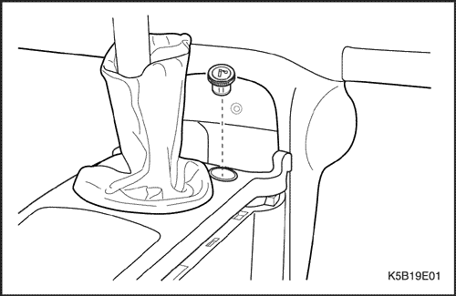


Encendedor de cigarrillos
(Indicado para conducción a izquierdas, conducción a derechas similar)
Procedimiento de desmontaje
- Desconecte el cable negativo de la batería.
- Desmonte el encendedor de cigarrillos de su enchufe.
- Desmonte la funda guardapolvo de la palanca del cambio.
- Desenchufe el conector eléctrico.
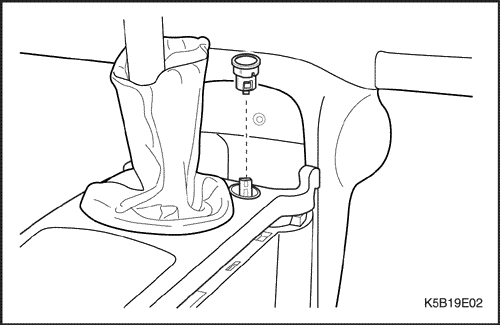
- Desmonte el enchufe del encendedor de cigarrillos de su alojamiento.
Precaución: El borde del alojamiento del cenicero podría lesionarlo de gravedad.
Procedimiento de montaje
- Enchufe el conector eléctrico.
- Monte el enchufe del encendedor de cigarrillos.
- Monte la funda guardapolvo de la palanca del cambio.
- Monte el encendedor de cigarrillos en su enchufe.
- Monte el cenicero.
- Conecte el cable negativo de la batería.
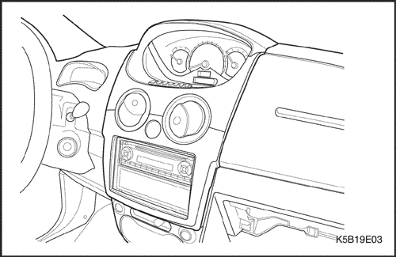
Moldura del cuadro de instrumentos
(Indicado para conducción a izquierdas, conducción a derechas similar)
Procedimiento de desmontaje
- Desconecte el cable negativo de la batería.
- Desmonte la moldura del cuadro del panel de instrumentos.
- Desenchufe el conector del interruptor de luces de emergencia.
Procedimiento de montaje
- Enchufe el conector del interruptor de luces de emergencia.
- Coloque la moldura del cuadro en el panel de guarnecido del cuadro de instrumentos.
- Conecte el cable negativo de la batería.
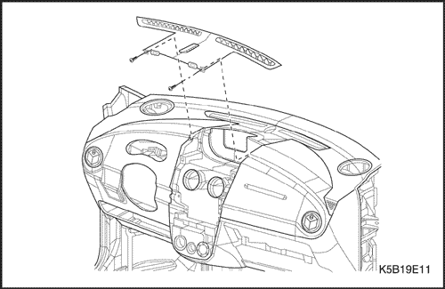
Rejilla del antivaho delantero
Procedimiento de desmontaje
- Desconecte el cable negativo de la batería.
- Desmonte la moldura del cuadro del panel de instrumentos. Consulte el apartado "Moldura del cuadro de instrumentos" de esta sección.
- Desmonte el cuadro de indicadores. Consulte el apartado "Cuadro de indicadores" de esta sección.
- Quite los tornillos de la rejilla del antivaho delantero.
Procedimiento de montaje
- Monte la rejilla del antivaho delantero con sus tornillos.
Apretar
Apriete los tornillos de la rejilla del antivaho delantero hasta 3 N•m (27 lb-pulg.).
- Monte el cuadro de indicadores. Consulte el apartado "Cuadro de indicadores" de esta sección.
- Monte la moldura del cuadro de instrumentos. Consulte el apartado "Moldura del cuadro de instrumentos" de esta sección.
- Conecte el cable negativo de la batería.
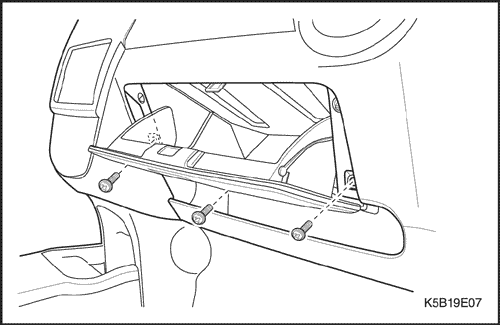
Guantera
(Indicado para conducción a izquierdas, conducción a derechas similar)
Procedimiento de desmontaje
- Retire los tornillos de la guantera.
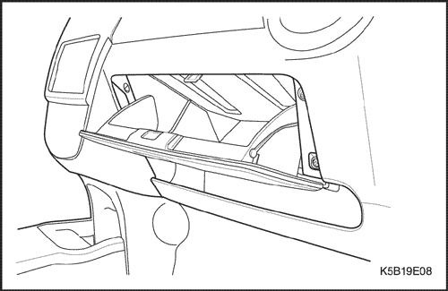
- Desmonte la guantera del panel de instrumentos.
Procedimiento de montaje
- Monte la guantera en el panel de instrumentos con sus tornillos.
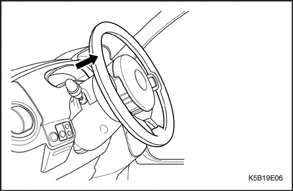
Indicador de instrumento
(Indicado para conducción a izquierdas, conducción a derechas similar)
Procedimiento de desmontaje
- Desconecte el cable negativo de la batería.
- Desmonte el indicador de instrumentos.
- Desenchufe el conector eléctrico.
Procedimiento de montaje
- Enchufe el conector eléctrico.
- Monte el indicador de instrumentos.
- Monte el indicador de instrumentos.
- Conecte el cable negativo de la batería.
- Conecte el cable negativo de la batería.
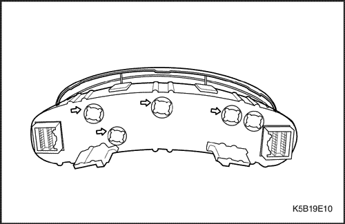
Luz indicadora de instrumentos
(Indicado para conducción a izquierdas, conducción a derechas similar)
Procedimiento de desmontaje
- Desconecte el cable negativo de la batería.
- Desmonte el indicador de instrumentos. Consulte el apartado "Indicador de instrumentos" de esta sección.
- Quite la bombilla de la parte trasera del indicador de instrumentos.
Procedimiento de montaje
- Monte una bombilla nueva.
- Monte el indicador de instrumentos. Consulte el apartado "Indicador de instrumentos" de esta sección.
- Monte el indicador de instrumentos. Consulte el apartado "Indicador de instrumentos" de esta sección.
- Conecte el cable negativo de la batería.
- Conecte el cable negativo de la batería.
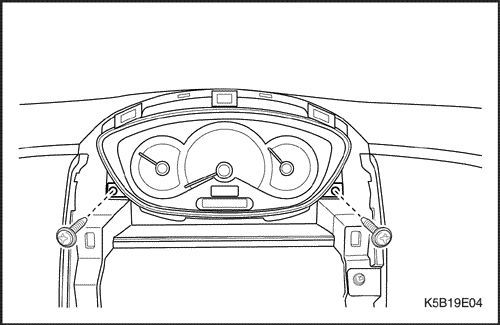
Cuadro de indicadores
Procedimiento de desmontaje
- Desconecte el cable negativo de la batería.
- Desmonte la moldura del cuadro del panel de instrumentos. Consulte el apartado "Moldura del cuadro de instrumentos" de esta sección.
- Quite los tornillos y el conjunto del cuadro de indicadores del panel de instrumentos.
- Desenchufe el conector eléctrico.
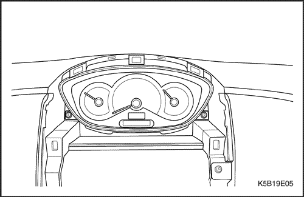
Procedimiento de montaje
- Enchufe el conector eléctrico.
- Monte el cuadro de indicadores en el panel de instrumentos con sus tornillos.
Apretar
Apriete los tornillos del cuadro de indicadores hasta 4 N•m (35 lb-pulg.).
- Coloque la moldura del cuadro en el panel de instrumentos. Consulte el apartado "Moldura del cuadro de instrumentos" de esta sección.
- Conecte el cable negativo de la batería.
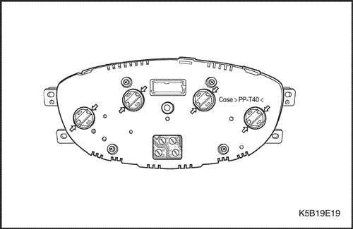
Luces indicadoras del cuadro de indicadores
(Indicado para conducción a izquierdas, conducción a derechas similar)
Procedimiento de desmontaje
- Desconecte el cable negativo de la batería.
- Desmonte el cuadro de indicadores del panel de instrumentos. Consulte el apartado "Cuadro de indicadores" de esta sección.
- Desmonte las lámparas de la luz indicadora por la parte posterior del cuadro.
Procedimiento de montaje
- Ponga la lámpara de la luz indicadora.
- Monte el cuadro de indicadores en el panel de instrumentos. Consulte el apartado "Cuadro de indicadores" de esta sección.
- Conecte el cable negativo de la batería.
Panel de instrumentos
(Indicado para conducción a izquierdas, conducción a derechas similar)
Procedimiento de desmontaje
- Desconecte el cable negativo de la batería.
- Desmonte la tapa del volante.
- Desmonte del volante el módulo del airbag del conductor. Consulte la Sección 8B, Sujeciones suplementarias inflables (SIR)(en vehículos equipados con airbag).
- Desmonte la tapa de acabado de la columna de dirección. Consulte la Sección 6E, Volante y columna de dirección.
- Desmonte el volante de la columna de la dirección. Consulte la Sección 6E, Volante y columna de dirección.
- Desmonte los interruptores de los intermitentes y del limpiaparabrisas. Consulte la Sección 6E, Volante y columna de dirección.
- Desmonte el panel de guarnecido basculante delantero. Consulte la Sección 9G, Guarnecido interior.
- Desmonte los paneles de guarnecido del montante A haciendo palanca. Consulte la Sección 9G, Guarnecido interior.
- Desmonte la moldura del cuadro del panel de instrumentos. Consulte el apartado "Moldura del cuadro de instrumentos" de esta sección.
Aviso: Con el fin de evitar daños en el panel de instrumentos, cubra la punta del destornillador plano con un paño.
- Desmonte el cuadro de indicadores. Consulte el apartado "Cuadro de indicadores" de esta sección.
- Desmonte la rejilla del antivaho delantero. Consulte el apartado "Rejilla del antivaho delantero" de esta sección.
- Desmonte el indicador de instrumentos. Consulte el apartado "Indicador de instrumentos" de esta sección.
- Desmonte el equipo de sonido del panel de instrumentos. Consulte la Sección 9F, Equipo de sonido.
- Desmonte el controlador del A/A del instrumento. Consulte la sección 7B, Sistema de calefacción, ventilación y aire acondicionado de control manual.
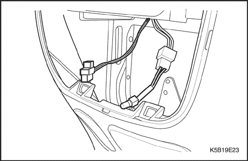
- Desmonte del panel de instrumentos la palanca de liberación del cierre del capó. Consulte la Sección 9R, Parte delantera de la carrocería.
- Desmonte el conjunto de la guantera del panel de instrumentos. Consulte el apartado "Guantera" de esta sección.
- Desmonte el módulo del airbag del pasajero del panel de instrumentos. Consulte la Sección 8B, Sujeciones suplementarias inflables (SIR)(en vehículos equipados con airbag).
- Desmonte la tapa del altavoz delantero y el altavoz. Consulte la sección 9F, Sistemas de audio.
- Desmonte el interruptor de control del retrovisor.
- Desmonte la consola del piso. Consulte la sección 9G, Consola del piso.
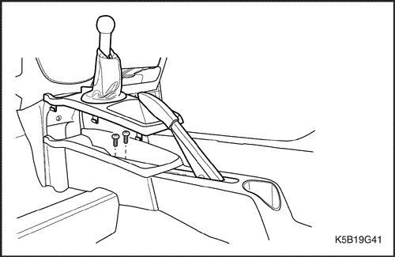
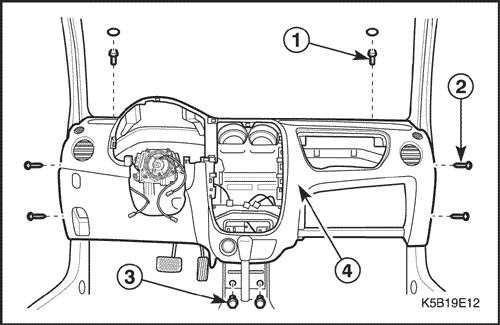
- Quite los tornillos y los pernos del conjunto del panel de instrumentos.
- Desmonte el panel de instrumentos del vehículo.
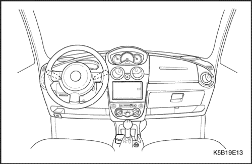
Procedimiento de montaje
- Monte el panel de instrumentos con sus tornillos.
Apretar
Apriete los tornillos del panel de instrumentos hasta 6 N•m (53 lb-pulg.).
- Monte la consola del piso. Consulte la sección 9G, Consola del piso.
- Monte el interruptor de control del retrovisor.
- Monte el altavoz delantero y la tapa del altavoz. Consulte la sección 9F, Sistemas de audio.
- Monte el módulo del airbag del pasajero en el panel de instrumentos. Consulte la Sección 8B, Sujeciones suplementarias inflables (SIR)(en vehículos equipados con airbag).
- Monte el conjunto de la guantera en el panel de instrumentos. Consulte el apartado "Guantera" de esta sección.
- Monte en el panel de instrumentos la palanca de liberación del cierre del capó. Consulte la Sección 9R, Parte delantera de la carrocería.
- Monte el equipo de sonido en el panel de instrumentos. Consulte la sección 9F, Equipo de sonido.
- Monte el controlador del A/A en el panel de instrumentos. Consulte la sección 7B, Sistema de calefacción, ventilación y aire acondicionado de control manual.
- Monte el conjunto del cuadro de instrumentos. Consulte el apartado "Indicador de instrumentos" de esta sección.
- Monte la rejilla del antivaho delantero. Consulte el apartado "Rejilla del antivaho delantero" de esta sección.
- Monte el cuadro de indicadores. Consulte el apartado "Cuadro de indicadores" de esta sección.
- Monte la moldura del cuadro en el panel de instrumentos con sus tornillos.
- Monte los paneles de guarnecido del montante A. Consulte la Sección 9G, Guarnecido interior.
- Monte el panel de guarnecido basculante delantero. Consulte la Sección 9G, Guarnecido interior.
- Monte los interruptores de los intermitentes y del limpiaparabrisas. Consulte la Sección 6E, Volante y columna de dirección.
- Monte la tapa de acabado de la columna de dirección. Consulte la Sección 6E, Volante y columna de dirección.
- Monte el volante en la columna de la dirección.
- Monte el módulo del airbag del conductor en el volante. Consulte la Sección 8B, Sujeciones suplementarias inflables (SIR)(en vehículos equipados con airbag).
- Monte la tapa del volante.
- Conecte el cable negativo de la batería.
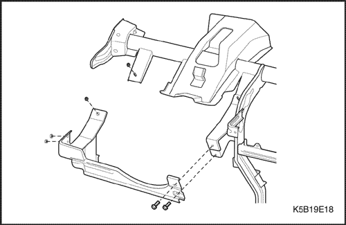
Protector para las rodillas
(Indicado para conducción a izquierdas, conducción a derechas similar)
Procedimiento de desmontaje
- Desconecte el cable negativo de la batería.
- Desmonte el panel de instrumentos. Consulte el apartado "Panel de instrumentos" de esta sección.
- Quite los tornillos y las tuercas del protector para las rodillas.
- Desmonte el protector para las rodillas de la barra de anclaje.
Procedimiento de montaje
- Monte el protector para las rodillas con sus tornillos y tuercas.
Apretar
Apriete los tornillos y tuercas del protector para las rodillas hasta 13 N•m (115 lb-pulg.).
- Desmonte el panel de instrumentos. Consulte el apartado "Panel de instrumentos" de esta sección.
- Conecte el cable negativo de la batería.
Barra de anclaje
(Indicado para conducción a izquierdas, conducción a derechas similar)
Procedimiento de desmontaje
- Desconecte el cable negativo de la batería.
- Desmonte el conjunto del panel de instrumentos. Consulte el apartado "Panel de instrumentos" de esta sección.
- Desmonte de la barra de anclaje el manguito del conducto del antivaho.
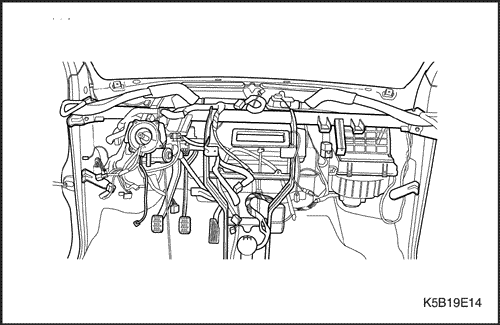
- Quite las tuercas del volante y desmonte la columna de la dirección. Consulte la Sección 6E, Volante y columna de dirección.
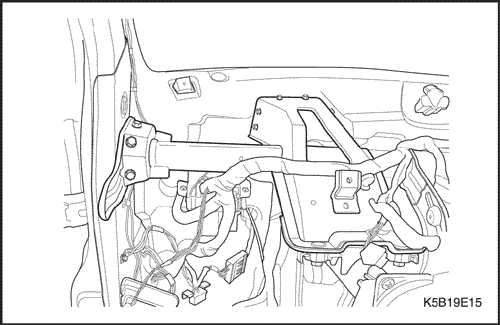
- Desmonte el conducto del antivaho del panel superior del capó.
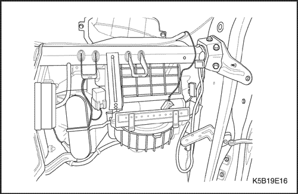
- Quite los tornillos y la barra de anclaje.
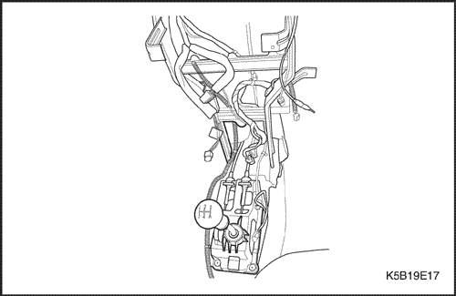
- Quite los tornillos y el centro de la barra de anclaje.
Procedimiento de montaje
- Monte la barra de anclaje con sus tornillos.
- Monte la parte central de la barra de anclaje con sus tornillos.
Apretar
Apriete los tornillos de la barra de anclaje hasta 13 N•m (115 lb-pulg.).
- Monte el conducto del antivaho con sus tornillos en el panel superior del capó.
- Monte la columna de la dirección con sus tuercas.
- Monte el manguito del conductos de antivaho con sus tornillos.
- Monte el conjunto del panel de instrumentos. Consulte el apartado "Panel de instrumentos" de esta sección.
- Conecte el cable negativo de la batería.
| © Copyright Chevrolet Europe. Reservados todos los derechos |